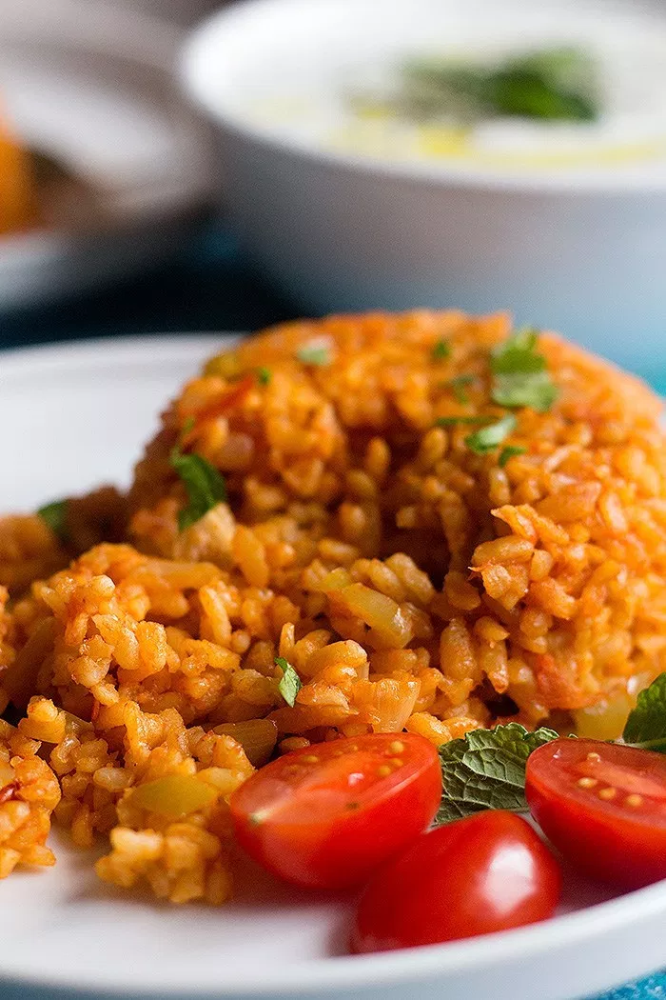

Turkish Bulgur Bilaf

Description
Turkish style bulgur pilaf is a classic hearty and healthy dish that is easy to make.
This dish is an alternative to rice or bread, and can be served with many dishes.
Recipe
Ingredients
- 2 cups bulgur (coarse)
- 2 tbsp olive oil
- 1 large onion (diced)
- 3 cloves garlic (minced)
- 1 green pepper (chopped)
- 3 roma tomatoes (chopped)
- 1 ½ tablespoon tomato paste
- ½ teaspoon salt
- ½ teaspoon black pepper
- 3 ½ cup water
Instructions
- Place the bulgur in a bowl and rinse a few times. Set it aside.
- Heat the olive oil in a pot over medium heat. Sauté the onion until translucent and then add the minced garlic. Cook for a minute.
- Add in the diced green pepper and cook for a few minutes until it softens.
- Add in the chopped tomatoes and stir well. Cook until they start releasing their juice.
- Add the tomato paste and stir well so it combines with the other ingredients.
- Add the salt and pepper and add in the rinsed bulgur. Stir well.
- Turn the heat to medium high and add in the water. Once it comes to a simmer, lower the heat to medium, cover with a lid and cook for about 20-25 minutes until the water is almost completely evaporated.
- Wrap the lid in a clean kitchen towel and place it on the pot. Turn the heat to medium low and cook for another 10 minutes.
- Turn the heat off the let the bulgur sit for 5 minutes untouched, then fluff it with a fork and serve.